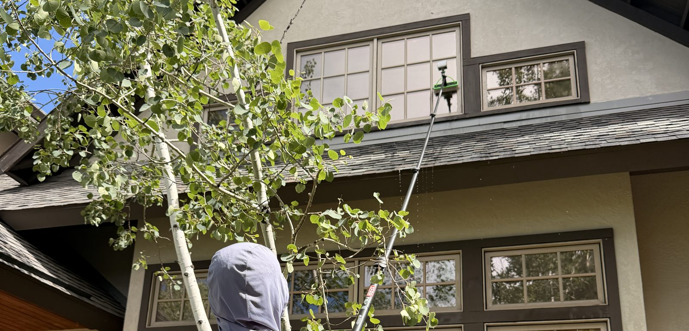
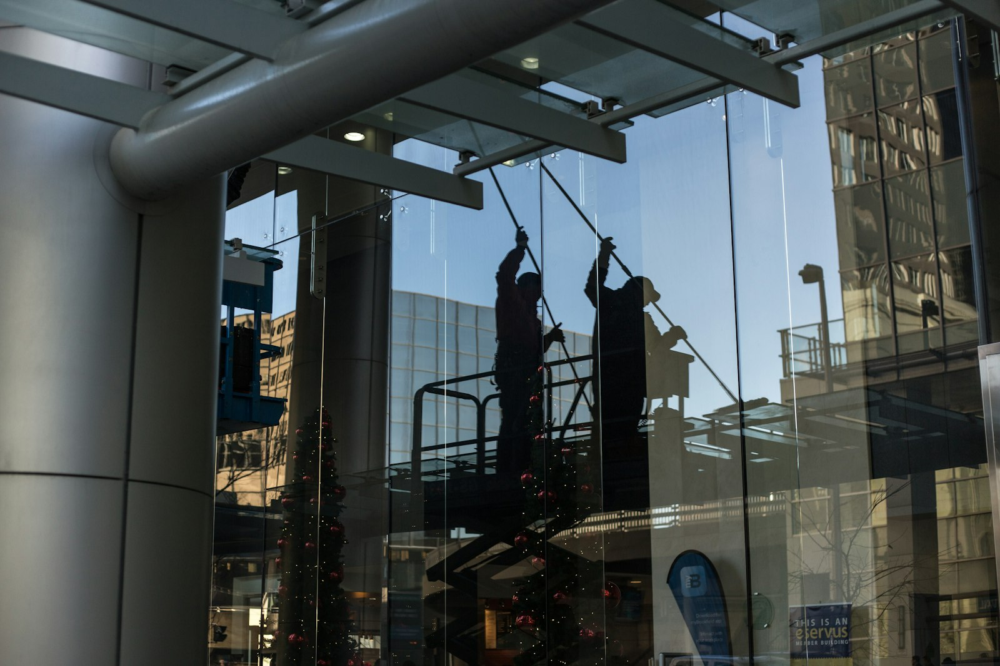
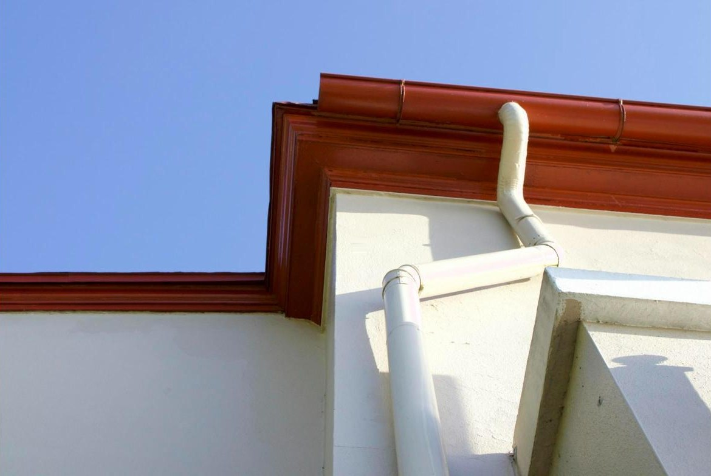

Menu
Every job ends with a satisfaction walk-through. Prices are typical starting rates for a single-story home or small storefront. Larger jobs are quoted after a quick walk-around.
Home windows

-
Signature Window Wash
Interior and exterior hand-washing, including sills and tracks. Our most-booked service.
$6 per pane
-
Second-Story and High-Access Cleaning
Extension-pole and ladder service for upper-story windows and steep mountain rooflines.
$8 per pane
-
Hard Water Stain Removal
Mineral-deposit treatment for windows affected by sprinkler or snowmelt spotting.
$10 per pane
-
Skylight Cleaning
Interior and exterior cleaning for flat and domed skylights.
$20 per skylight
-
Screen Cleaning
Screens hand-washed, dried, and rehung so the clean glass stays clean.
$4 per screen
Businesses and rentals

-
Commercial Storefront Package
Exterior glass cleaning for storefronts and offices on a weekly, biweekly, or monthly route.
From $85 per visit
-
Vacation Rental Turnover Clean
Fast interior and exterior glass cleaning between guest checkouts and check-ins.
$45 per unit
-
Post-Construction Window Detail
Removes construction dust, paint overspray, and stickers before a final walkthrough.
From $0.60 per square foot
-
Office Interior Glass
Partition walls, conference room glass, and entry doors cleaned after business hours.
$3 per pane
-
Entry Door Touch-Up
A quick midweek wipe of the glass doors your customers touch the most.
$25 per visit
Add-ons and plans

-
Gutter Cleaning Add-On
Hand-cleared gutters and a downspout flush, booked alongside a window wash.
From $120 per property
-
Rescreening
Torn or sun-damaged screens replaced on the spot with new mesh.
$15 per screen
-
Track and Sill Deep Clean
Vacuumed and scrubbed window tracks so sliders open smoothly again.
$2 per window
-
Mirror and Shower Glass
Soap scum and water spots removed from interior glass while we are already inside.
$5 per piece
-
Seasonal Maintenance Plan
A standing seasonal visit bundling a window wash, screen check, and gutter glance. Save 15%.
$150 per visit